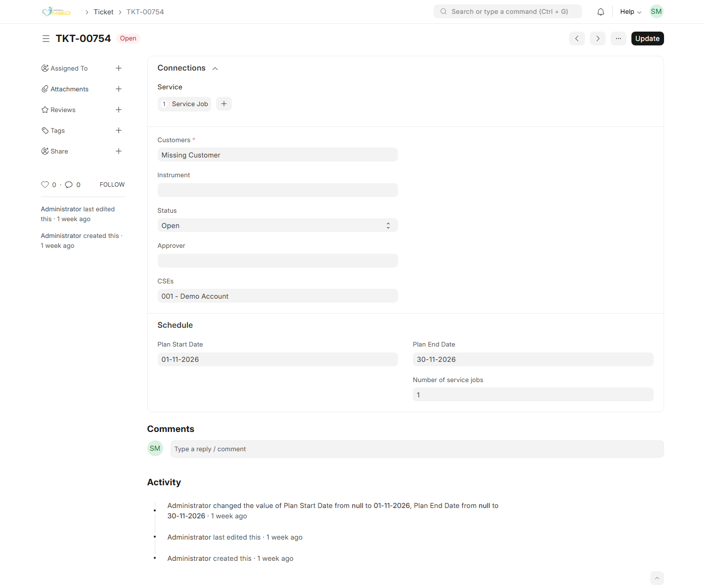

Mục đích
Hướng dẫn này mô tả quy trình ghi nhận công việc dịch vụ theo ba tầng: Ticket (phiếu hỗ trợ — có thể gắn nhiều khách hàng) → Service Job (công việc cụ thể — chọn một khách hàng trong danh sách của Ticket) → Service Time (giờ làm việc của kỹ sư).
Một Ticket có thể có nhiều Service Job; mỗi Service Job có thể có nhiều Service Time. Danh sách CSE được thu hẹp dần theo từng tầng để tránh gán nhầm người không thuộc ca làm việc.
Quan hệ dữ liệu
Ticket (danh sách khách hàng, trạng thái, người duyệt, danh sách kỹ sư CSE; tùy chọn Plan Start Date / Plan End Date)
└─ Service Job (gắn Ticket; kỹ sư trên job phải nằm trong danh sách CSE của Ticket; chỉ job Preventive Maintenance bị kiểm tra Plan Start/End trong phạm vi ngày plan của Ticket khi Ticket đã nhập đủ hai ngày)
└─ Service Time (gắn Service Job; kỹ sư ghi giờ phải nằm trong danh sách CSE của Job)
└─ Service Job (gắn Ticket; kỹ sư trên job phải nằm trong danh sách CSE của Ticket; chỉ job Preventive Maintenance bị kiểm tra Plan Start/End trong phạm vi ngày plan của Ticket khi Ticket đã nhập đủ hai ngày)
└─ Service Time (gắn Service Job; kỹ sư ghi giờ phải nằm trong danh sách CSE của Job)
Sau khi lưu Ticket, mở lại phiếu để thấy khu vực Connections → Service Job (số badge = số job đã tạo) và nút + để thêm job mới từ Ticket.
